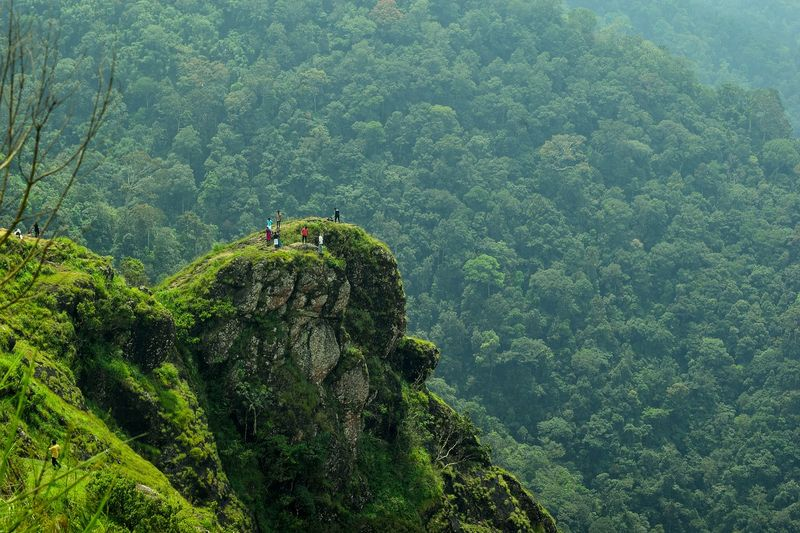

Best time to visit the God's own country

Our package
- Price : - On Request
- Tour Location : Vagamon-Cochin-Wonderla
- No Of Days : 2 Night and 3 days
- No Of People : 3+
Day 1
Vagamon is tucked away from the Idukki district and it’s a perfect place for paragliding in hill stations with a greenery atmosphere. Vagamon Pine Forest, Thangalpara, Kurisumala, Uluppuni Tunnel & Waterfalls, and Vagamon Meadows are other attractive places.
Day 2
Checkout from the hotel and depart to Cochin, popularly known as the Queen of Arabian Sea. Cochin has numerous places to explore like Mattancherry Palace, Dutch Palace, Police Museum, Lulu Mall, and Vypin Beach
Day 3
Depart to Wonderla Kochi, the first park in India to receive a certificate for eco-friendliness and safety. The park is spread over 30 acres of landscaped space with more than 60 Amusement Rides. Enjoy a full day with Wonderla activities.
Package Inclusion:
- Accommodation in Hotel.
- Food: MAP Plan.
- Jeep Safari.
- Campfire.
- Sightseeing as per itinerary with Suitable Vehicle.
- All Parking and Permit Charges.
- Wonderla Theme Park Entry.
Package Exclusion:
- Train Fare / Air fair etc..
- Other Personal Expenses.
- Entry fee for any place of visit.
- Sightseeing which is not mentioned in the Package.
- Extra Food / Charges for which is not mentioned above the Package.
- unavoidable circumstances or natural calamities, itineraries may be changed or reversed; however, all inclusions in the itinerary will remain the same.